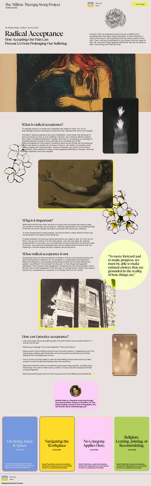

Radical Acceptance
How Accepting Our Pain Can Prevent Us From Prolonging Our Suffering
Difficult life experiences can leave us with intense and sometimes overwhelming feelings. Our reactions to these experiences can vary widely—from anger and sadness to numbness and confusion. What many of us struggle with is not just the initial pain, but our resistance to accepting that the experience happened at all.

What is radical acceptance?
Radical acceptance is a concept rooted in Buddhism and popularized in Western psychology by Marsha Linehan through dialectical behavior therapy (DBT). It involves fully accepting reality as it is, without judgment or resistance—even when that reality is painful or difficult.
When we practice radical acceptance, we acknowledge what has happened without trying to change it, deny it, or fight against it. This doesn't mean we approve of or like what happened; it simply means we stop fighting a reality we cannot change.
Why is it Important?
Radical acceptance frees us from the exhausting effort of resisting what cannot be changed. When we stop fighting reality, we conserve emotional energy that can be directed toward healing and growth.
What radical acceptance is not
Radical acceptance is not resignation, approval, or passivity. It doesn't mean we give up or stop caring. Rather, it's an active choice to see things as they are so we can respond effectively rather than react from a place of denial or rage.
To move forward and to make progress, we must be able to make rational choices that are grounded in the reality of how things are.
How can I practice acceptance?
- Acknowledge the reality of what has happened
- Notice and name your resistance
- Remind yourself that fighting reality doesn't change it
- Practice mindfulness to stay present with difficult emotions
- Offer yourself compassion as you work toward acceptance